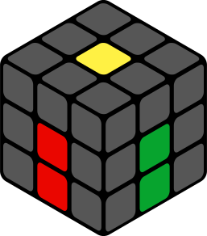

Скоростная сборка кубика Рубика 3х3. Метод Джессики Фридрих.
Этот метод был придуман в 1981 году в Чехии Джессикой Фридрих. Он относится к послойным методам, т.е. кубик собирается по слоям, как во многих методиках для начинающих. Однако в данном методе сделаны усовершенствования, позволяющие снизить количество этапов с 7 до 4. Сначала собирается крест на начальной стороне, потом собирается первый слой одновременно со вторым, а последний слой решается в 2 этапа. Но не все так просто, чтобы освоить данный метод полностью, нужно выучить 119 алгоритмов!
Все этапы изучения делят на 4 составляющие Крест (Cross), F2L, OLL и PLL, которые мы выделили в отдельные разделы на сайте. Переходите в них и начинайте изучать один из самых интересных методов сборки кубика Рубика:
Крест (Cross)F2LOLLPLLP.S. Не советуем учить метод Фридрих, если вы начинающий. Сначала хорошо освойте обычную послойную методику. Доведите свое время хотя бы до полутора-двух минут, а уже потом начинайте потихоньку переходить на Джессику.